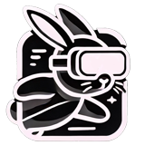

A crossword for your hands · Mixed reality
Crosspieces
No keyboard. Every answer is a small carved piece on the table in front of you. Pick one up, work out its word, and send it flying into the grid.

A NXT/WebXR productionCrosspieces · 2026 More free WebXR experiencesnxtwebxr.com↗